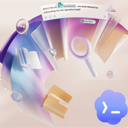

用户使用与意见
数据仅来自本机 AuditFlow，会自动刷新；审核正文、附件内容和外部系统凭据不进入统计。
近 7 日主要事件
按事件次数用户意见
0 条| 时间 | 邮箱 | 类型 | 评分 | 意见 |
|---|
需要管理员登录
请先在 JEAuditFlow 中登录管理员账户。
返回登录
AuditFlow 运营后台本地使用与意见监控 连接中数据仅来自本机 AuditFlow，会自动刷新；审核正文、附件内容和外部系统凭据不进入统计。
| 时间 | 邮箱 | 类型 | 评分 | 意见 |
|---|
请先在 JEAuditFlow 中登录管理员账户。
返回登录